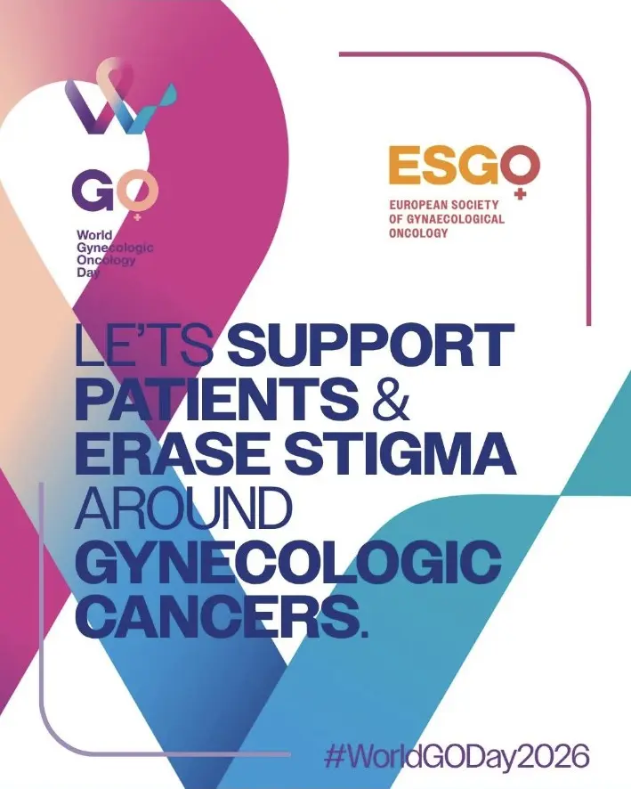

Ziua Mondială a Cancerelor Ginecologice
Astăzi marcăm cea de-a opta ediție a World Gynecologic Oncology Day, inițiativă internațională dedicată informării despre cancerele ginecologice, prevenției și sprijinirii pacientelor.
Cancerul de col uterin, endometrial, ovarian, vulvar și vaginal poate afecta femei de vârste diferite. Vaccinarea anti-HPV și screeningul de col uterin au un rol important în prevenție, iar simptome precum sângerările vaginale anormale, durerea pelvină persistentă, balonarea care nu se remite sau modificările de la nivelul vulvei merită evaluate medical.
La fel de important este să vorbim deschis, fără rușine și fără stigmatizare. O pacientă diagnosticată cu un cancer ginecologic are nevoie nu doar de tratament, ci și de informații clare, respect și sprijin pe întregul parcurs medical.
Sursă și informații suplimentare: World Gynecologic Oncology Day – ESGO